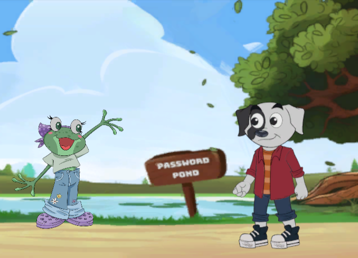

Google Scholar 🔗 LinkedIn 🔗 Github
Dr. Shannon Beck has a long career in cybersecurity and computer science, working in government and non-profit sectors. Shannon is a faculty member in the Computer and Cyber Sciences at the United States Air Force Academy (USAFA). In that role, Shannon is the department's STEM outreach coordinator, leading outreach efforts, reaching out to over 5000 students in 2023 alone. Another outreach effort led by Shannon is a team of two VSFS interns working on gamification for cybersecurity middle-school at https://Cyberpup.Academy.
Shannon has led efforts to create a new interdisciplinary course as part of the USAFA Scholars Program, working closely with Law to create a combined introductory computer science and law for officers.
As a member of the Federal-level NIST National Initiative for Cybersecurity Education (NICE) K-12 Community of Interest, Shannon has led a sub-committee and served in multiple roles, as well as presenting work at their annual conference in 2019, 2020, and 2023.
Dr. Beck worked for over a decade at Los Alamos National Laboratory. Work includes DoD software development and system integration, bioinformatics, database solutions, and on cyber security defensive operations. Dr. Beck led multiple Department of Energy Cyber Fire training courses at week-long events, where she co-created the Entry Point training track to on-board professionals new to defensive cyber security.
Dr. Beck served as the Program Coordinator and Associate Program Director for the Secure and Trustworthy Cyberspace (SaTC) program at the National Science Foundation (NSF), helping manage one of the largest interdisciplinary funding programs at the NSF with over 1,000 actively funded projects.
Once joining the United States Air Force Academy, Shannon was the committee 2023 Jean Bartik Computing Symposium (JBCS) for women and minorities in computing at the service academies, and currently serves on the UMGC Industry Advisory Board (IAB).
